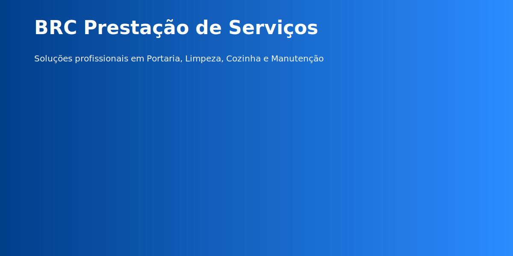

BRC — Serviços confiáveis para empresas e residências
Equipe treinada, processos padronizados e soluções sob medida em Portaria, Limpeza, Cozinha e Manutenção geral.
Quem somos
BRC é especializada em prestação de serviços terceirizados com foco na excelência operacional, segurança e satisfação do cliente.
Missão: Promover serviços de qualidade com responsabilidade.
Visão: Ser referência regional em prestação de serviços.
Valores: Ética, compromisso e melhoria contínua.

Nossos Serviços
Portaria
Controle de acesso, segurança e recepção com equipe capacitada.
Limpeza
Serviços residenciais, corporativos e pós-obra com supervisão técnica.
Cozinha
Cozinheiros e auxiliares para refeitórios, eventos e serviços periódicos.
Marido de Aluguel
Montagem, reparos leves, elétrica básica e manutenção preventiva.
Por que contratar a BRC?
- Redução de custos operacionais e administrativos.
- Equipes treinadas e supervisionadas.
- Flexibilidade: contratos mensais, por hora ou avulsos.
- Relatórios e controle de qualidade.
Foco em atividades
Demanda do cliente: atendimento sob medida, com SLA definido. Serviços intangíveis: gestão e supervisão. Variedade: operação, limpeza, cozinha e manutenção. Modelo de negócio: terceirização e contratos recorrentes.